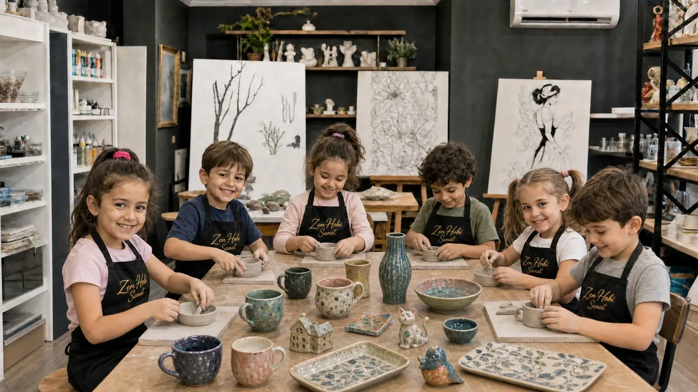

Creative Kids Art Studio
Foundational art education for children, run alongside an expert neuropsychologist. Not just an activity — a development-focused program that builds imagination, motor skills and confidence.
Children grow as they create
Our Creative Kids Studio isn't an activity — it's a genuine foundational art education program built around each child's development. Classes are planned and led alongside an expert neuropsychologist, so every project is matched to the child's age and developmental stage, turning into both an artistic and a developmental gain. As children create with clay, paint and different materials, they also learn self-expression, patience and confidence.
- Not an activity — development-focused foundational art education
- Classes are planned and led alongside an expert neuropsychologist
- A structured program matched to age and developmental stage
- Holistic development through ceramics, painting and crafts
- Safe materials, one-on-one attention in small groups
- Birthday parties and special group events
Moments from this studio
Art workshops tailored for schools
We organize art workshops for nurseries, primary and middle schools — for classes, club sessions or special days. With content planned alongside an expert neuropsychologist, we support students' creativity, motor skills and sense of creating together — more than an activity, an experience that touches development.
- Program adapted to class size and age group
- Can be held at our studio or at your school
- Development-focused content, planned with an expert neuropsychologist
- A holistic studio combining ceramics, painting and crafts
- All materials and equipment provided by us
- Ideal for end-of-term, special-day and field-trip programs
What parents want to know
Our studio is suitable for ages 4 and up. Content and session length are adapted to each age group.
Classes at our Creative Kids Studio are planned and led alongside an expert neuropsychologist. This means the content is designed to fit each child's age and developmental stage — the art-making becomes a foundational art education that also supports developmental areas like attention, fine motor skills, emotional regulation and confidence. In other words, what we do with the children isn't an activity — it's a development-focused education.
Every project has a developmental purpose: more than just an activity, we work within a framework that reinforces a child's strengths while gently working on the areas they need. Through careful observation and guidance, the child gets to experience self-expression, patience and creating together in a safe environment.
You're welcome to stay for the first few classes while your child settles in; children usually adjust quickly and start enjoying themselves.
Yes. We organize art workshops for nurseries, primary and middle schools, planned alongside an expert neuropsychologist and held either at our studio or at your school. Message us for details and a quote.
Yes! We organize ceramics- and painting-themed birthday workshops for children. Message us for details.
We spoke with a parent who has trusted us with their child for years
Parent Necat Babacan and our expert clinical & developmental neuropsychologist İrem Çalışkan talk about the positive effects of art on children and their experience at Zen Hobi Sanat.
Daily moments from the studio
New pieces, open enrollment spots and workshop announcements go up on Instagram first. It's the closest thing to the studio's everyday life — come get to know us there too.
Follow on Instagram


Ready to discover the Creative Kids Studio?
Let's plan a day and time that works for your child. Spots are limited — message us now.